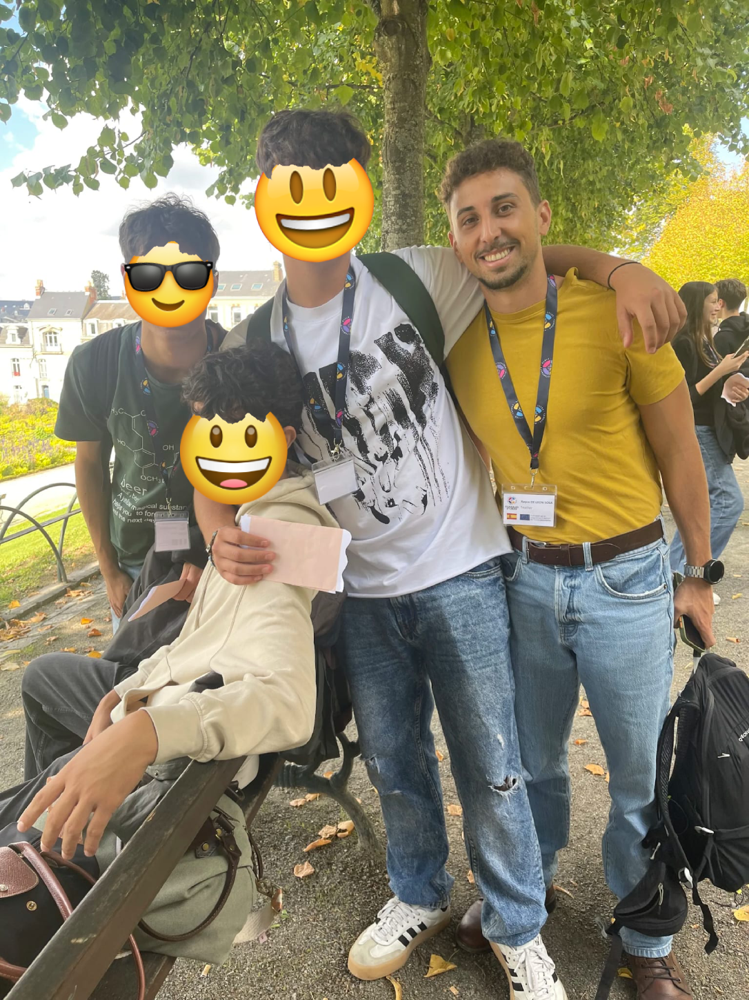

About me
About me
I am an English teacher, researcher and educational innovator from the Canary Islands. My professional path has taken me across different educational stages, contexts and countries, giving me a broad understanding of how students learn languages and how teachers can design meaningful learning experiences.

Teaching background
My teaching experience includes work with learners across different stages, from early years and primary education to secondary education and adult learners. I have also worked in international contexts, including educational experience in the United Kingdom, which has shaped my understanding of language learning, classroom diversity and student-centred teaching.
Educational approach
I am interested in approaches that make learning active, meaningful and connected to real contexts. My teaching practice draws on inquiry, CLIL/AICLE, formative assessment, visible thinking routines and the careful use of technology to support learning rather than replace it.
Research and innovation
My current research interests focus on AI literacy in education, particularly among teachers. I am interested in how educators understand AI, evaluate its possibilities and limitations, and apply it responsibly in classroom and school contexts.
Beyond the classroom
I have also been involved in international and mobility-related educational experiences, including Erasmus-related work with students. These experiences have reinforced my interest in multilingual education, intercultural learning and the role of schools in preparing students for a connected world.
Portfolio purpose
Through this portfolio, I share my teaching work, research interests, educational resources and reflections on the future of learning.